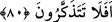
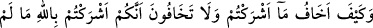
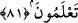

80. Kavmi onunla tartışmaya girişti. Onlara dedi ki: Beni doğru yola iletmişken,
Allah hakkında benimle tartışıyor musunuz? Ben sizin O’na ortak koştuğunuz
şeylerden korkmam. Ancak, Rabbim’in birşey dilemesi hariç. Rabbimin ilmi herşeyi
kuşatmıştır. Hâla ibret almıyor musunuz?
“Kavmi onunla” dini hakkında “tartışmaya” bir mücadele ve munazaraya “girişti”.
Hatta onu, putları terk ettiği taktirde, onların gazabına uğramakla tehdit ettiler.
İbrahim “onlara dedi ki, “Beni doğru yola iletmişken Allah hakkında” Allah’ın şanı
ve birliği hakkında “benimle tartışıyor musunuz?” Oysa ki O bana, doğru yolu
göstermiş ve hakikate ulaştırmıştır.
“Ben, sizin O’na” Allah’a “ortak koştuğunuz şeylerden” putlardan “korkmam”.
Onların bana bir kötülüğü dokunacak diye çekinmem. Çünkü putların bana herhangi bir
şey yapabilecek gücü yoktur.
“Ancak Rabb’imin dilediği olur.” “Allah’ın onların cihetinden bir kötülük dilediği
vakit müstesnâ hiç bir vakit sizin mâbûdunuz olan putlardan bana bir kötülük gelecek
diye korkmam. Kötülük ya da iyilik, ancak Hak Teâlâ cihetinden gelir. Buna hiçbir
şekilde sizin ilâhlarınızın dahli söz konusu olamaz.
“Rabb’im bilgice her şeyi kuşatmıştır.” Yani O, ilmiyle her şeyi kuşatmıştır. O’nun
bilgisi, herhangi bir sebeple sizin ilâhlarınızdan bana gelebilecek bir kötülüğü
kuşatmaktan uzak değildir. “Hâlâ (kendinize gelip) öğüt almıyor musunuz?” Sizin
ilâhlarınızın, hiç kimseye bir fayda vermek ya da zarar dokundurmaktan uzak cansız
varlıklar olduğunu düşünmüyor musunuz? O putların bana bir zarar vermeye güç
yetiremeyeceklerini akletmiyor musunuz?
81. Siz, Allah’ın size haklarında hiç bir hüküm indirmediği şeyleri O’na ortak
koşmaktan korkmazken, ben sizin ortak koştuğunuz şeylerden nasıl korkarım!
Şimdi biliyorsanız (söyleyin), iki guruptan hangisi güvende olmaya daha lâyıktır?”
“Hem siz, Allah’ın size” onların ortak koşulması hususunda “hiçbir delil” huccet,
burhan “indirmediği şeyleri O’na ortak koşmaktan korkmuyorsunuz da ben nasıl
sizin” Allah’a “ortak koştuğunuz şeylerden korkarım?” Allah’a ortak koştuğunuz